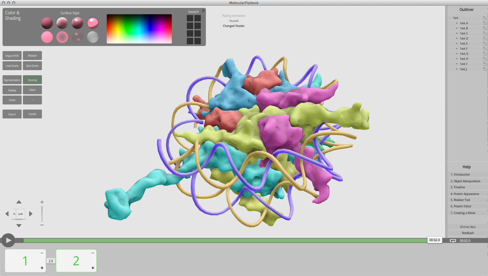
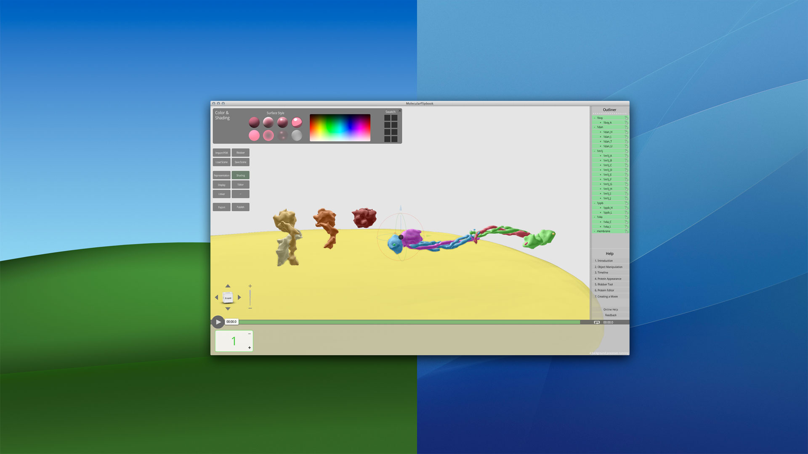
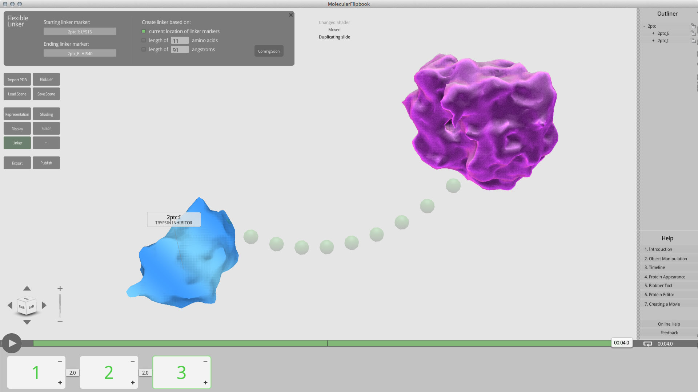

Molecular Flipbook for Harvard Medical School + Univeristy of Utah
We are all visual learners. Seeing something in motion is far more memorable than reading a description of it. Molecular Flipbook is an animation software designed for molecular biologists to create animation of protein interaction and share them online.
This US-based research project is made possible by a grant from the NSF. It has two components: a software application that allows biologist to create simple animations, and a website to share and view these animations.
I am responsible for the development of the application. Because we wanted the application to have a fun, interactive feel, the Blender Game Engine was chosen as the platform. All the coding is done in Python. A scientific library called MGLTools were used to handle some of the backend computations. Because the application is built on top of Blender, it was pretty easy to make it cross-platform.
For user interactions, we wanted to create a user interface that requires minimal training to use. Specifically, the application should be intuitible. Concepts faimiliar to 3D artists like 'keyframes', 'camera', and 'tween interpolations' might not be to scientists. So a lot of work was done in mapping these concepts to other more familiar ideas. For example, the animation system represent timeline and keyframes with a slide system found in Powerpoint.
I have never built an application of this scale before, so there was a learning curve. The biggest challenge had been dealing with the less-than-ideal design decisions I've made when I just started out, many of which is too ingrained now to refactor.
Building the application using Blender and Python gives me a very high-level platform to work with. Most of the complexity(such as 3D math) is abstracted away. Python itself is a very expressive language. The net result is very fast iteration time during development, great for a proof-of-concept application like this one.